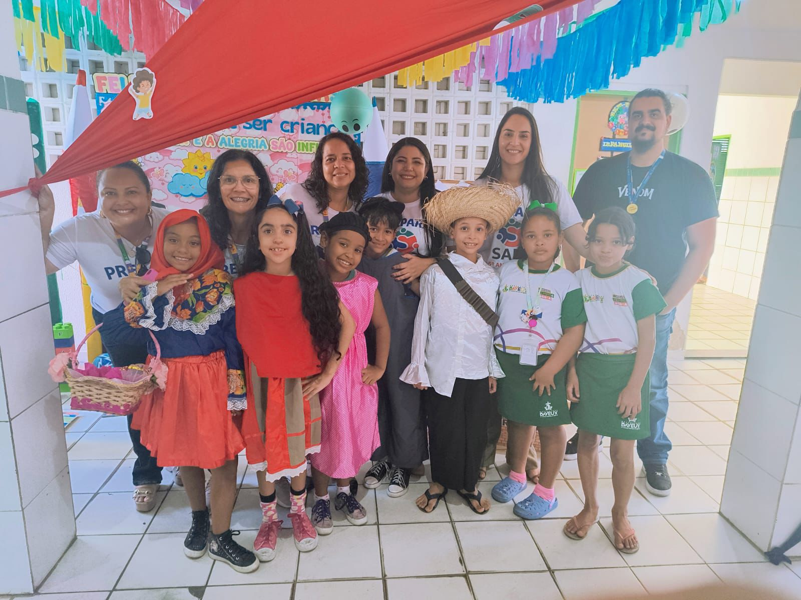
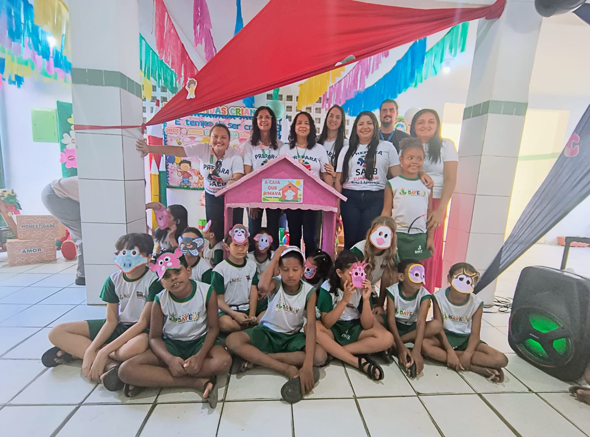
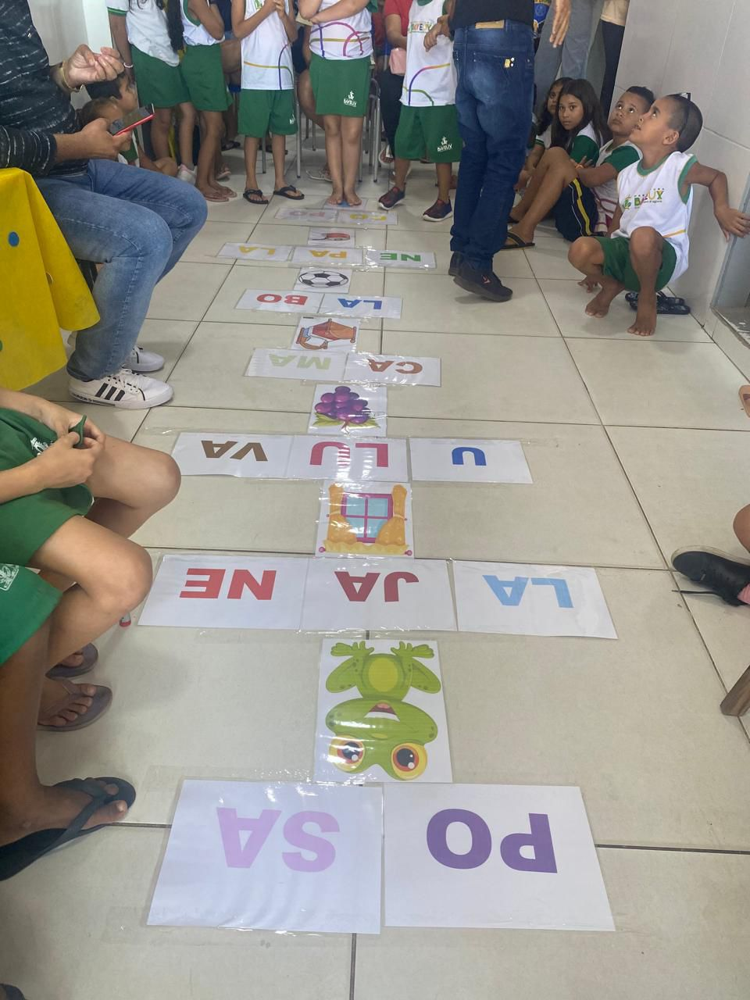
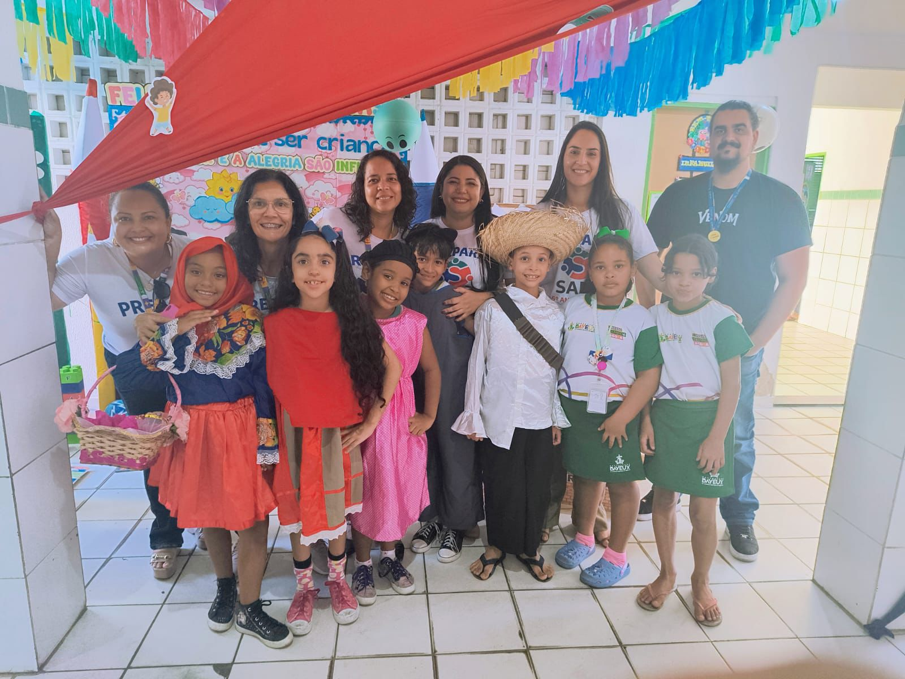
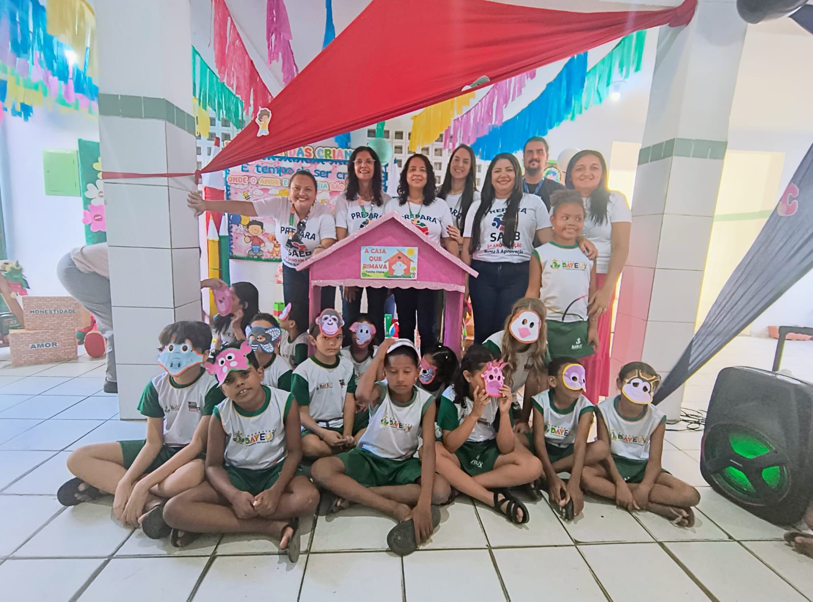
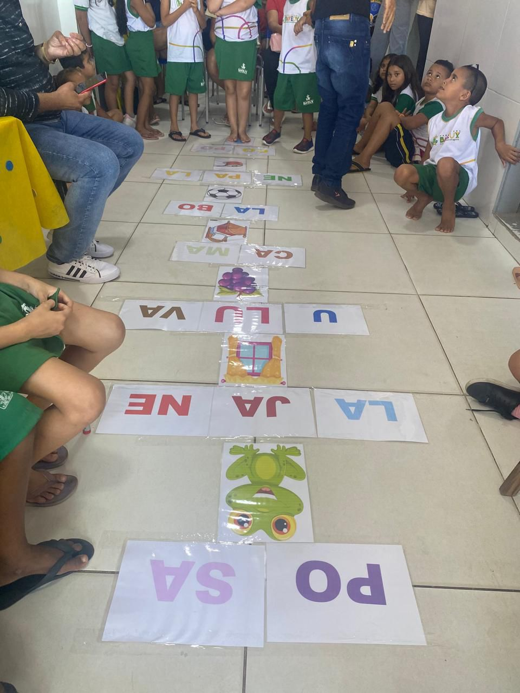

16 Outubro 2025
Educação em Movimento: Dia “A” da Alfabetização e Prepara SAEB mobilizam as escolas de Bayeux - PB
No dia 16 de outubro as unidades escolares dos Anos Iniciais da Rede Municipal de Bayeux viveram um dia especial de aprendizado, alegria e compromisso com a educação. A Secretaria Municipal de Educação, por meio da Coordenação dos Anos Iniciais, promoveu o Dia “A” da Alfabetização, uma ação simbólica e pedagógica que celebra o prazer de aprender a ler e escrever, reafirmando o compromisso do município com a alfabetização na idade certa.
 





Durante o evento, as escolas realizaram diversas atividades lúdicas, apresentações e
exposições que destacaram o avanço dos alunos e o empenho dos professores nesse importante processo de
aprendizagem.
No mesmo dia, também aconteceu o Prepara SAEB – 5º Ano em Ação: Rumo à Aprovação!,
iniciativa voltada para fortalecer o desempenho dos estudantes nas avaliações externas.
CFoi um momento de mobilização, incentivo e valorização do trabalho conjunto entre
gestores, professores, supervisores, alunos e família, todos unidos por um único propósito: garantir o
direito de aprender e alcançar os melhores resultados.